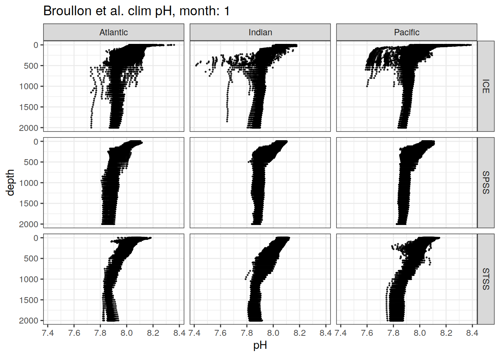
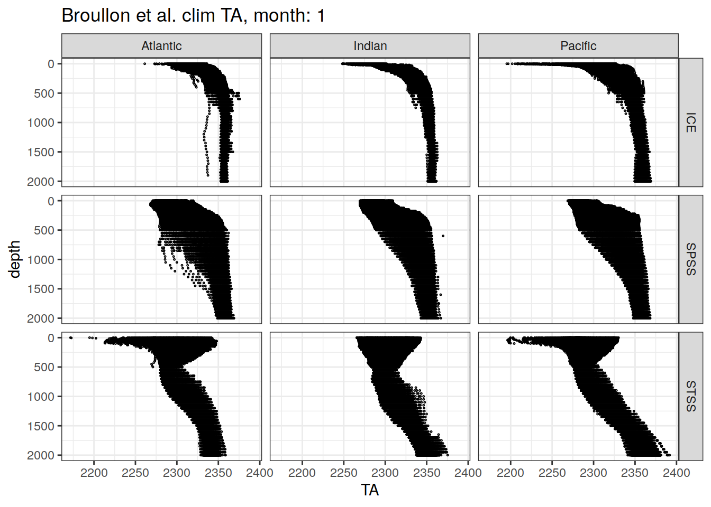
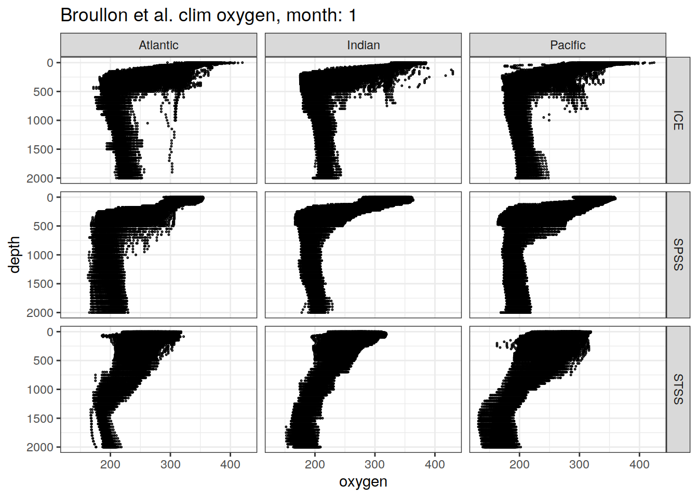

Broullon DIC/TA climatology
Pasqualina Vonlanthen & Jens Daniel Müller
14 December, 2023
Last updated: 2023-12-14
Checks: 7 0
Knit directory: bgc_argo_r_argodata/
This reproducible R Markdown analysis was created with workflowr (version 1.7.0). The Checks tab describes the reproducibility checks that were applied when the results were created. The Past versions tab lists the development history.
Great! Since the R Markdown file has been committed to the Git repository, you know the exact version of the code that produced these results.
Great job! The global environment was empty. Objects defined in the global environment can affect the analysis in your R Markdown file in unknown ways. For reproduciblity it’s best to always run the code in an empty environment.
The command set.seed(20211008) was run prior to running
the code in the R Markdown file. Setting a seed ensures that any results
that rely on randomness, e.g. subsampling or permutations, are
reproducible.
Great job! Recording the operating system, R version, and package versions is critical for reproducibility.
Nice! There were no cached chunks for this analysis, so you can be confident that you successfully produced the results during this run.
Great job! Using relative paths to the files within your workflowr project makes it easier to run your code on other machines.
Great! You are using Git for version control. Tracking code development and connecting the code version to the results is critical for reproducibility.
The results in this page were generated with repository version 64fd104. See the Past versions tab to see a history of the changes made to the R Markdown and HTML files.
Note that you need to be careful to ensure that all relevant files for
the analysis have been committed to Git prior to generating the results
(you can use wflow_publish or
wflow_git_commit). workflowr only checks the R Markdown
file, but you know if there are other scripts or data files that it
depends on. Below is the status of the Git repository when the results
were generated:
Ignored files:
Ignored: .Rhistory
Ignored: .Rproj.user/
Ignored: output/
Untracked files:
Untracked: code/doxy_vertical_align.Rmd
Untracked: code/nitrate_vertical_align.Rmd
Untracked: nitrate_align_climatology.Rmd
Unstaged changes:
Modified: analysis/_site.yml
Modified: analysis/combined_cluster_analysis.Rmd
Deleted: analysis/doxy_vertical_align.Rmd
Deleted: analysis/nitrate_vertical_align.Rmd
Deleted: code/doxy_align_climatology.Rmd
Deleted: code/load_clim_doxy_woa.Rmd
Modified: code/start_background_job.R
Note that any generated files, e.g. HTML, png, CSS, etc., are not included in this status report because it is ok for generated content to have uncommitted changes.
These are the previous versions of the repository in which changes were
made to the R Markdown
(analysis/load_broullon_DIC_TA_clim.Rmd) and HTML
(docs/load_broullon_DIC_TA_clim.html) files. If you’ve
configured a remote Git repository (see ?wflow_git_remote),
click on the hyperlinks in the table below to view the files as they
were in that past version.
| File | Version | Author | Date | Message |
|---|---|---|---|---|
| html | f110b74 | ds2n19 | 2023-12-13 | Build site. |
| Rmd | acb6523 | ds2n19 | 2023-12-12 | Added documentation added to tasks section at start of each script. |
| html | e60ebd2 | ds2n19 | 2023-12-07 | Build site. |
| html | 80c16c2 | ds2n19 | 2023-11-15 | Build site. |
| html | 7b3d8c5 | pasqualina-vonlanthendinenna | 2022-08-29 | Build site. |
| html | bdd516d | pasqualina-vonlanthendinenna | 2022-05-23 | Build site. |
| html | ae0f995 | jens-daniel-mueller | 2022-05-12 | Build site. |
| Rmd | 018f4b4 | jens-daniel-mueller | 2022-05-12 | scaled DIC to 2019 (rather than 2015) |
| html | 4173c20 | jens-daniel-mueller | 2022-05-12 | Build site. |
| Rmd | 78acca9 | jens-daniel-mueller | 2022-05-12 | run with DIC clim scaled to 2016 |
| html | dfe89d7 | jens-daniel-mueller | 2022-05-12 | Build site. |
| html | 710edd4 | jens-daniel-mueller | 2022-05-11 | Build site. |
| Rmd | 2f20a76 | jens-daniel-mueller | 2022-05-11 | rebuild all after subsetting AB profiles and code cleaning |
Task
Explore the Broullón et al. (2020) DIC / TA climatology
This climatology is not currently used. As this markdown file takes several hours to run it can be excluded from the website refresh process.
library(tidyverse)
library(lubridate)
library(stars)
library(seacarb)
library(gsw)path_argo <- '/nfs/kryo/work/updata/bgc_argo_r_argodata'
path_argo_preprocessed <- paste0(path_argo, "/preprocessed_bgc_data")
path_emlr_utilities <- "/nfs/kryo/work/jenmueller/emlr_cant/utilities/files/"
path_emlr_preprocessing <- "/nfs/kryo/work/jenmueller/emlr_cant/observations/preprocessing/"
path_updata <- '/nfs/kryo/work/updata'
path_broullon_clim <- paste0(path_updata, "/broullon_co2_monthly_climatology")
path_woa13_temp <- paste0(path_updata, "/woa2013/temperature/decav/1.00/")
path_woa13_sal <- paste0(path_updata, "/woa2013/salinity/decav/1.00/")theme_set(theme_bw())map <- map <-
read_rds(paste(path_emlr_utilities,
"map_landmask_WOA18.rds",
sep = ""))
nm_biomes <- read_rds(file = paste0(path_argo_preprocessed, "/nm_biomes.rds"))
# WOA 18 basin mask
basinmask <-
read_csv(
paste(path_emlr_utilities,
"basin_mask_WOA18.csv",
sep = ""),
col_types = cols("MLR_basins" = col_character())
)
basinmask <- basinmask %>%
filter(MLR_basins == unique(basinmask$MLR_basins)[1]) %>%
select(-c(MLR_basins, basin))Load Broullon data
DIC
DIC_clim <- tidync::hyper_tibble(paste0(path_broullon_clim, "/TCO2_NNGv2LDEO_climatology.nc"))
nc_depth <- read_ncdf(paste0(path_broullon_clim, "/TCO2_NNGv2LDEO_climatology.nc"),
var = c("depth"))
nc_depth <- as_tibble(nc_depth)
nc_depth <- nc_depth %>%
mutate(depth_level = depth_level+0.5)
DIC_clim <- full_join(DIC_clim, nc_depth)
DIC_clim <- DIC_clim %>%
rename(DIC = TCO2_NNGv2LDEO,
month = time)
rm(nc_depth)
# table(unique(DIC_clim$latitude))
# table(unique(DIC_clim$longitude))
# table(unique(DIC_clim$time))
# table(unique(DIC_clim$depth))
# text <- read_file(paste0(path_broullon_clim, "/README_global_monthly_2020.txt"))
# Depth goes down to 5500 m, but below 1500 m DIC is an annual climatological value, rather than a monthly climatological value TA
TA_clim <- tidync::hyper_tibble(paste0(path_broullon_clim, "/AT_NNGv2_climatology.nc"))
nc_depth <- read_ncdf(paste0(path_broullon_clim, "/AT_NNGv2_climatology.nc"),
var = c('depth'))
nc_depth <- as_tibble(nc_depth)
nc_depth <- nc_depth %>%
mutate(depth_level = depth_level+0.5)
TA_clim <- full_join(TA_clim, nc_depth)
rm(nc_depth)
# read_file(paste0(path_broullon_clim, "/README_Global_monthly_2019.txt"))
TA_clim <- TA_clim %>%
rename(TA = AT_NNGv2,
month = time)
# Depth goes down to 5500 m, but below 1500 m TA is an annual climatological value, rather than a monthly climatological value pco2_clim <- tidync::hyper_tibble(paste0(path_broullon_clim, "/pCO2_NNGv2LDEO_climatology.nc"))
pco2_clim <- pco2_clim %>%
mutate(depth_level = 1) %>%
rename(pco2 = pCO2_NNGv2LDEO,
month = time)Join data
broullon_clim <- full_join(DIC_clim, TA_clim)
# broullon_clim <- full_join(broullon_clim, pco2_clim)
rm(DIC_clim, TA_clim)Load WOA13 data
months <- sprintf("%02d", seq(1,12,1))
for (i_month in months) {
# i_month <- months[1]
# read temperature climatology
woa13_temp <-
read_ncdf(
paste0(path_woa13_temp, "woa13_decav_t", i_month, "_01.nc"),
var = "t_an",
make_units = FALSE,
make_time = FALSE
)
woa13_temp <- woa13_temp %>%
as_tibble()
woa13_temp <- woa13_temp %>%
mutate(month = i_month) %>%
select(-time) %>%
rename(temp = t_an) %>%
drop_na()
# read salinity climatology
woa13_sal <-
read_ncdf(
paste0(path_woa13_sal, "woa13_decav_s", i_month, "_01.nc"),
var = "s_an",
make_units = FALSE,
make_time = FALSE
)
woa13_sal <- woa13_sal %>%
as_tibble()
woa13_sal <- woa13_sal %>%
mutate(month = i_month) %>%
select(-time) %>%
rename(sal = s_an) %>%
drop_na()
# join temperature and salinity climatology
woa13_temp <- full_join(woa13_temp,
woa13_sal)
# bind months into joined data frame
if (exists("woa13")) {
woa13 <- bind_rows(woa13, woa13_temp)
}
if (!exists("woa13")) {
woa13 <- woa13_temp
}
}
woa13 <- woa13 %>%
mutate(month = as.numeric(month))
rm(woa13_temp, woa13_sal, months, i_month)Harmonise data
# put longitude and latitude labels to the center of the grid (.5º)
broullon_clim <- broullon_clim %>%
rename(lon = longitude,
lat = latitude) %>%
select(-depth_level) %>%
mutate(lon = if_else(lon < 20, lon + 360, lon))
broullon_clim <- broullon_clim %>%
drop_na()# put longitude and latitude labels to the center of the grid (.5º)
woa13 <- woa13 %>%
mutate(lon = if_else(lon < 20, lon + 360, lon))Join Broullon/WOA13
broullon_clim <- full_join(broullon_clim,
woa13)
# remove grid cells with only one sal value to allow for interpolation
broullon_clim <- broullon_clim %>%
group_by(month, lat, lon) %>%
mutate(n = sum(!is.na(sal))) %>%
ungroup()
broullon_clim <- broullon_clim %>%
filter(n > 1) %>%
select(-n)
# interpolate sal/temp to broullon depth levels
broullon_clim <- broullon_clim %>%
group_by(lon, lat, month) %>%
arrange(depth) %>%
mutate(sal := approxfun(depth, sal, rule = 2)(depth),
temp := approxfun(depth, temp, rule = 2)(depth)) %>%
ungroup()
# remove sal/temp data on original woa13 depth levels
broullon_clim <- broullon_clim %>%
filter(!is.na(DIC))Apply basin mask
# subset Southerh Ocean data
broullon_clim_SO <- broullon_clim %>%
filter(lat <= -30,
depth <= 2000)
# join regional separations
broullon_clim_SO <- inner_join(broullon_clim_SO, nm_biomes)
broullon_clim_SO <- inner_join(broullon_clim_SO, basinmask)
broullon_clim <- inner_join(broullon_clim, basinmask)Write all data
broullon_clim %>%
write_rds(file = paste0(path_argo_preprocessed, "/broullon_TA_DIC_clim_all.rds"))Load Gruber 2019
G19_dcant_3d <-
read_csv(paste0(path_emlr_preprocessing,
"G19_dcant_3d.csv"))
G19_dcant_3d <- G19_dcant_3d %>%
select(lon, lat, depth, dcant = dcant_pos)
G19_dcant_3d <- inner_join(G19_dcant_3d,
nm_biomes %>% select(lon, lat))Scale DIC to 2016
# unique(G19_dcant_3d$depth)
# unique(broullon_clim_SO$depth)
broullon_clim_SO <-
full_join(broullon_clim_SO,
G19_dcant_3d %>% filter(depth <= 2000))
# remove grid cells with only one sal value to allow for interpolation
broullon_clim_SO <- broullon_clim_SO %>%
group_by(month, lat, lon) %>%
mutate(n = sum(!is.na(dcant))) %>%
ungroup()
broullon_clim_SO <- broullon_clim_SO %>%
filter(n > 1) %>%
select(-n)
# interpolate dcant to Broullon clim depth levels
broullon_clim_SO <- broullon_clim_SO %>%
group_by(lon, lat, month) %>%
arrange(depth) %>%
mutate(dcant := approxfun(depth, dcant, rule = 2)(depth)) %>%
ungroup()
# remove sal/temp data on original woa13 depth levels
broullon_clim_SO <- broullon_clim_SO %>%
filter(!is.na(DIC))
broullon_clim_SO <- broullon_clim_SO %>%
mutate(DIC = DIC + dcant * ((2019-1995)/(2007-1994))) %>%
select(-dcant)Calculate pH
rm(broullon_clim, woa13)
# calculate pressure from depth
broullon_clim_SO <- broullon_clim_SO %>%
mutate(pressure = gsw_p_from_z(z = -depth,
latitude = lat))
# broullon_clim_SO <- broullon_clim_SO %>%
# arrange(lon, lat)
#
# # calculate pHT from DIC, TA and ancillary parameters
# for (i_lon in unique(broullon_clim_SO$lon)) {
# print("***")
# print(i_lon)
#
# broullon_clim_SO_lon <- broullon_clim_SO %>%
# filter(lon == i_lon)
#
# for (i_lat in unique(broullon_clim_SO_lon$lat)) {
# print(i_lat)
#
# broullon_clim_SO_lon_lat <-
# broullon_clim_SO_lon %>%
# filter(lat == i_lat) %>%
# mutate(
# pH = carb(
# flag = 15,
# var1 = TA * 1e-6,
# var2 = DIC * 1e-6,
# S = sal,
# T = temp,
# P = pressure / 10,
# Pt = phosphate * 1e-6,
# Sit = silicate * 1e-6,
# k1k2 = "l"
# )[,6]
# )
#
# # bind months into joined data frame
# if (exists("broullon_clim_SO_pH")) {
# broullon_clim_SO_pH <- bind_rows(broullon_clim_SO_pH, broullon_clim_SO_lon_lat)
# }
#
# if (!exists("broullon_clim_SO_pH")) {
# broullon_clim_SO_pH <- broullon_clim_SO_lon_lat
# }
#
# }
# }
#
# rm(broullon_clim_SO_lon_lat, broullon_clim_SO_lon)
broullon_clim_SO_pH <-
broullon_clim_SO %>%
mutate(
pH = carb(
flag = 15,
var1 = TA * 1e-6,
var2 = DIC * 1e-6,
S = sal,
T = temp,
P = pressure / 10,
Pt = phosphate * 1e-6,
Sit = silicate * 1e-6,
k1k2 = "l"
)[, 6]
)Write SO+pH data
broullon_clim_SO_pH %>%
write_rds(file = paste0(path_argo_preprocessed, "/broullon_TA_DIC_clim_SO_pH.rds"))Plot data
pH
broullon_clim_SO_pH %>%
group_split(depth) %>%
head(2) %>%
map(
~map +
geom_tile(data = .x,
aes(x = lon,
y = lat,
fill = pH))+
scale_fill_viridis_c()+
lims(y = c(-85, -28))+
facet_wrap(~month, ncol = 2)+
labs(title = paste0('Broullon et al. (2020) pH clim, depth: ', unique(.x$depth)))
)[[1]]
[[2]]
broullon_clim_SO_pH %>%
# filter(depth <= 1500) %>%
group_split(month) %>%
head(2) %>%
map(
~ ggplot(data = .x,
aes(x = pH,
y = depth))+
geom_point(data = .x,
aes(x = pH,
y = depth),
size = 0.2,
pch = 1)+
scale_y_reverse()+
facet_grid(biome_name~basin_AIP)+
labs(title = paste0('Broullon et al. clim pH, month: ', unique(.x$month)),
x = 'pH')
)[[1]]
[[2]]
DIC
broullon_clim_SO_pH %>%
group_split(depth) %>%
head(2) %>%
map(
~map +
geom_tile(data = .x,
aes(x = lon,
y = lat,
fill = DIC))+
scale_fill_viridis_c()+
lims(y = c(-85, -28))+
facet_wrap(~month, ncol = 2)+
labs(title = paste0('Broullon et al. (2020) DIC clim, depth: ', unique(.x$depth)))
)[[1]]
[[2]]
broullon_clim_SO_pH %>%
# filter(depth <= 1500) %>%
group_split(month) %>%
head(2) %>%
map(
~ ggplot(data = .x,
aes(x = DIC,
y = depth))+
geom_point(data = .x,
aes(x = DIC,
y = depth),
size = 0.2,
pch = 1)+
scale_y_reverse()+
facet_grid(biome_name~basin_AIP)+
labs(title = paste0('Broullon et al. clim DIC, month: ', unique(.x$month)),
x = 'DIC')
)[[1]]
[[2]]
TA
broullon_clim_SO_pH %>%
group_split(depth) %>%
head(2) %>%
map(
~map +
geom_tile(data = .x,
aes(x = lon,
y = lat,
fill = TA))+
scale_fill_viridis_c()+
lims(y = c(-85, -28))+
facet_wrap(~month, ncol = 2)+
labs(title = paste0('Broullon et al. (2020) TA clim, depth: ', unique(.x$depth)))
)[[1]]
[[2]]
broullon_clim_SO_pH %>%
# filter(depth <= 1500) %>%
group_split(month) %>%
head(2) %>%
map(
~ ggplot(data = .x,
aes(x = TA,
y = depth))+
geom_point(data = .x,
aes(x = TA,
y = depth),
size = 0.2,
pch = 1)+
scale_y_reverse()+
facet_grid(biome_name~basin_AIP)+
labs(title = paste0('Broullon et al. clim TA, month: ', unique(.x$month)))
)[[1]]
[[2]]
Oxygen
broullon_clim_SO_pH %>%
group_split(depth) %>%
head(2) %>%
map(
~map +
geom_tile(data = .x,
aes(x = lon,
y = lat,
fill = oxygen))+
scale_fill_viridis_c()+
lims(y = c(-85, -28))+
facet_wrap(~month, ncol = 2)+
labs(title = paste0('Broullon et al. (2020) oxygen clim, depth: ', unique(.x$depth)))
)[[1]]
[[2]]
broullon_clim_SO_pH %>%
# filter(depth <= 1500) %>%
group_split(month) %>%
head(2) %>%
map(
~ ggplot(data = .x,
aes(x = oxygen,
y = depth))+
geom_point(data = .x,
aes(x = oxygen,
y = depth),
size = 0.2,
pch = 1)+
scale_y_reverse()+
facet_grid(biome_name~basin_AIP)+
labs(title = paste0('Broullon et al. clim oxygen, month: ', unique(.x$month)))
)[[1]]
[[2]]
Nitrate
broullon_clim_SO_pH %>%
group_split(depth) %>%
head(2) %>%
map(
~map +
geom_tile(data = .x,
aes(x = lon,
y = lat,
fill = nitrate))+
scale_fill_viridis_c()+
lims(y = c(-85, -28))+
facet_wrap(~month, ncol = 2)+
labs(title = paste0('Broullon et al. (2020) nitrate clim, depth: ', unique(.x$depth)))
)[[1]]
[[2]]
broullon_clim_SO_pH %>%
# filter(depth <= 1500) %>%
group_split(month) %>%
head(2) %>%
map(
~ ggplot(data = .x,
aes(x = nitrate,
y = depth))+
geom_point(data = .x,
aes(x = nitrate,
y = depth),
size = 0.2,
pch = 1)+
scale_y_reverse()+
facet_grid(biome_name~basin_AIP)+
labs(title = paste0('Broullon et al. clim nitrate, month: ', unique(.x$month)))
)[[1]]
[[2]]
Phosphate
broullon_clim_SO_pH %>%
group_split(depth) %>%
head(2) %>%
map(
~map +
geom_tile(data = .x,
aes(x = lon,
y = lat,
fill = phosphate))+
scale_fill_viridis_c()+
lims(y = c(-85, -28))+
facet_wrap(~month, ncol = 2)+
labs(title = paste0('Broullon et al. (2020) phosphate clim, depth: ', unique(.x$depth)))
)[[1]]
[[2]]
broullon_clim_SO_pH %>%
# filter(depth <= 1500) %>%
group_split(month) %>%
head(2) %>%
map(
~ ggplot(data = .x,
aes(x = phosphate,
y = depth))+
geom_point(data = .x,
aes(x = phosphate,
y = depth),
size = 0.2,
pch = 1)+
scale_y_reverse()+
facet_grid(biome_name~basin_AIP)+
labs(title = paste0('Broullon et al. clim phosphate, month: ', unique(.x$month)))
)[[1]]
[[2]]
sessionInfo()R version 4.2.2 (2022-10-31)
Platform: x86_64-pc-linux-gnu (64-bit)
Running under: openSUSE Leap 15.5
Matrix products: default
BLAS: /usr/local/R-4.2.2/lib64/R/lib/libRblas.so
LAPACK: /usr/local/R-4.2.2/lib64/R/lib/libRlapack.so
locale:
[1] LC_CTYPE=en_US.UTF-8 LC_NUMERIC=C
[3] LC_TIME=en_US.UTF-8 LC_COLLATE=en_US.UTF-8
[5] LC_MONETARY=en_US.UTF-8 LC_MESSAGES=en_US.UTF-8
[7] LC_PAPER=en_US.UTF-8 LC_NAME=C
[9] LC_ADDRESS=C LC_TELEPHONE=C
[11] LC_MEASUREMENT=en_US.UTF-8 LC_IDENTIFICATION=C
attached base packages:
[1] stats graphics grDevices utils datasets methods base
other attached packages:
[1] seacarb_3.3.1 SolveSAPHE_2.1.0 oce_1.7-10 gsw_1.1-1
[5] stars_0.6-0 sf_1.0-9 abind_1.4-5 lubridate_1.9.0
[9] timechange_0.1.1 forcats_0.5.2 stringr_1.5.0 dplyr_1.1.3
[13] purrr_1.0.2 readr_2.1.3 tidyr_1.3.0 tibble_3.2.1
[17] ggplot2_3.4.4 tidyverse_1.3.2
loaded via a namespace (and not attached):
[1] fs_1.5.2 bit64_4.0.5 httr_1.4.4
[4] rprojroot_2.0.3 tools_4.2.2 backports_1.4.1
[7] bslib_0.4.1 utf8_1.2.2 R6_2.5.1
[10] KernSmooth_2.23-20 DBI_1.1.3 colorspace_2.0-3
[13] withr_2.5.0 tidyselect_1.2.0 bit_4.0.5
[16] compiler_4.2.2 git2r_0.30.1 cli_3.6.1
[19] rvest_1.0.3 RNetCDF_2.6-1 xml2_1.3.3
[22] labeling_0.4.2 sass_0.4.4 scales_1.2.1
[25] classInt_0.4-8 proxy_0.4-27 digest_0.6.30
[28] rmarkdown_2.18 pkgconfig_2.0.3 htmltools_0.5.3
[31] highr_0.9 dbplyr_2.2.1 fastmap_1.1.0
[34] rlang_1.1.1 tidync_0.3.0 readxl_1.4.1
[37] rstudioapi_0.15.0 farver_2.1.1 jquerylib_0.1.4
[40] generics_0.1.3 jsonlite_1.8.3 vroom_1.6.0
[43] googlesheets4_1.0.1 magrittr_2.0.3 ncmeta_0.3.5
[46] Rcpp_1.0.10 munsell_0.5.0 fansi_1.0.3
[49] lifecycle_1.0.3 stringi_1.7.8 whisker_0.4
[52] yaml_2.3.6 grid_4.2.2 parallel_4.2.2
[55] promises_1.2.0.1 crayon_1.5.2 haven_2.5.1
[58] hms_1.1.2 knitr_1.41 pillar_1.9.0
[61] reprex_2.0.2 glue_1.6.2 evaluate_0.18
[64] modelr_0.1.10 vctrs_0.6.4 tzdb_0.3.0
[67] httpuv_1.6.6 cellranger_1.1.0 gtable_0.3.1
[70] assertthat_0.2.1 cachem_1.0.6 xfun_0.35
[73] lwgeom_0.2-10 broom_1.0.5 e1071_1.7-12
[76] later_1.3.0 viridisLite_0.4.1 ncdf4_1.19
[79] class_7.3-20 googledrive_2.0.0 gargle_1.2.1
[82] workflowr_1.7.0 units_0.8-0 ellipsis_0.3.2